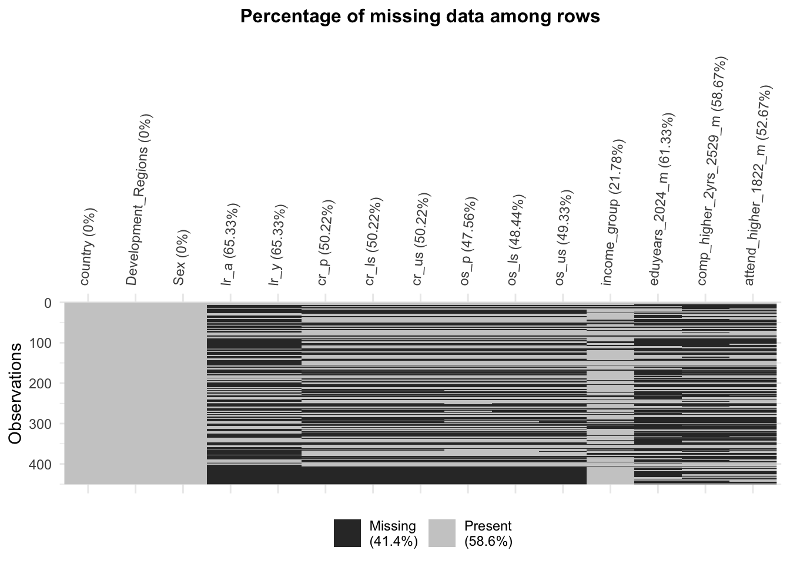
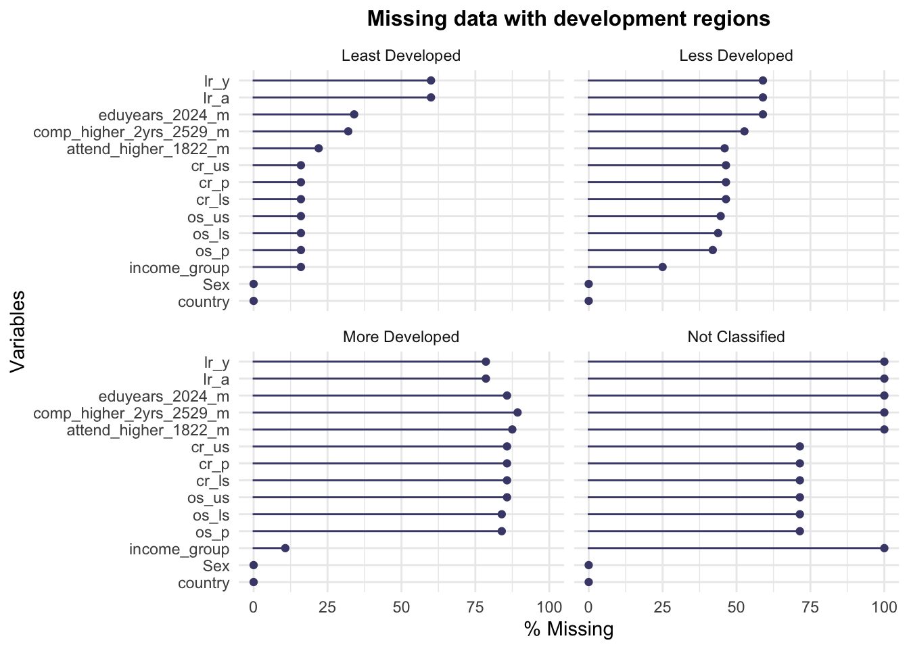

Chapter 3 Data
3.1 Sources
Our proposed dataset was collected from multiple data sources over the past 10+ years.
Multiple Indicator Cluster Surveys (MICS) database contains information about children and women from over 200 countries round the world, such as children poverty, HIV/AIDS. All data are primary and gathered from surveys organized by UNICEF. The MICS surveys are designed based on an initial assessment of data needed for national monitoring priorities. Data collecting fieldwork is usually completed within two to four months.[2]
Demographic and Health Surveys (DHS) is a nationally representative survey that collects a wealth of information on various topics in a specific country. The data is processed and presented in the final survey report containing several tables that provide information on specific indicators in a country. The DHS Program supports a range of data collection options that can be tailored to fit host countries’ particular monitoring and evaluation needs.
The DHS Program’s basic approach is to collect comparable data across countries. To achieve this, standard model questionnaires have been developed, along with a written description of why certain questions or sections have been included. They have the model questionnaires in each country.
Surveys with large sample sizes (usually between 5,000 and 30,000 households). In all households, women aged 15-49 are eligible to participate; in many surveys, men aged 15-54(59) from a sub-sample are also eligible to participate. There are three core questionnaires in DHS surveys: A Household Questionnaire, a Women’s Questionnaire, and a Men’s questionnaire.[3]
There are over 100 indicators regarding gender and education from our data sources. After screening, the eleven indicators which we chose to use in this project mainly come from six aspects:
Completion rate presents the percentage of cohort of children or young people three to five years older than the intended age for the last grade of each level of education (primary, lower secondary, or upper secondary) who have completed that level of education. A low completion rate indicates low or delayed entry into a given level of education, high drop-out, high repetition, late completion, or a combination of these factors. The dataset has 3 sheets, each for one level of education.
Out-of-school children rate illustrates the proportion of children who fall within the prescribed age range for a particular educational level but do not attend primary, lower secondary, or higher secondary school. The higher the out-of-school rate, the more emphasis must be placed on expanding access to education. Three sheets, one for each degree of schooling, make up the dataset.
Literacy rate displays percentage of population (youth and adult) that can both read and write a short, simple statement about their everyday life. A lower rate means more of the population is illiterate. The dataset is separated into 2 sheets, each of which represents an age group.
Higher education attendance rate shows percentage of people aged 18-22 years attending higher education.
Tertiary completion rate are percentage of people aged 25–29/30–34, who have completed at least two/four years of higher education.
Mean years of education indicates average number of years of schooling attained for the age group 20–24 years.
Several problems of data are discovered:
The period of data collection ranges from 2010 to 2021. Most recent data is used for countries with multiple years of data. Therefore, data from some countries may be collected in 2010 while some may be collected in 2021. It raises the risk of comparison inequality. Developments over the past 10 years have likely increased access to education.
Since all data are collected from household surveys, the reliability of this kind of house-to-house survey is questionable. This is also a common problem of the primary data source.
There are many missing values in our proposed dataset. Our missing value analysis implies there are more missing values for more developed countries. The reasons and details are discussed in Section 3.3. Besides, as the dataset is assembled from multiple data sources, missing values increase. Most countries lack at least one indicator.
3.2 Cleaning / transformation
Since we collected 4 datasets, cleaning and transformation are performed separately. In datasets of completion rate, literacy rate and out-of-school rate, worksheets are separated using read_excel from readxl package. Columns other than country name, development level and indicators are all removed, leaving us a 202 \(*\) 4 dataset. Ordinal Regional development level is categorized into 4 levels, listed sequentially: not classified, least developed, less developed, and more developed. After transforming with pivot_longer (i.e, creating a categorical column for gender), each dataset is now with 404 rows and 4 columns. These eight data frames are combined first by country names, development level and sex.
In addition, the other three indicators are all in one dataset. This dataset contains records from multiple years. Maximum values for each country are chosen instead of the most recent values since it is discovered that some countries have the most recent values of 0 but valid numbers for other records. To uniform with other rates, tertiary completion rate and high education attendance rate are multiplied by 100. There are over 300 countries/regions in this dataset, which means around 25 countries only exist here. Therefore, when combining all data frames together by country names, we observed that these 25 countries have NA for development level. Development level is a key criteria for our purpose and we do not want to remove these data as they have valid records. Fortunately, these data have variables of income level. Therefore, we decided to use income level to categorize these countries. In detail, low-income countries go into the least developed. Lower middle and upper-income countries go into less developed and high-income ones are more developed.
Finally, we obtained a table with 450 rows and 15 columns. Each row presents a country/region. 11 columns record over 1900 indicator data points and other columns are country, development level, sex, and income group.
3.3 Missing value analysis
In this section, we will deal with our missing data and use four kinds of graphs to see the distribution and percentage of our missing value. There are no missing values for country, development_regions, and sex, so we will focus on the rest of the variables.

In this plot, we can clearly see the missing value in each column with the percentage. In general, there are 41.4% missing values in total. For the country, development regions, and have no missing value. For other indicators, the ly_a (literacy for adults) and ly_y (literacy for youth) have the highest missing percentage, 65.33%. After observing the percentage of missing values, we want to know the specific count for each and the missing counts in the intersection part.

In this plot, there are 11 indicators visualized. The left side shows how many missing values for each indicator; for example, there are around 220 missing values for the os_p (out of school for primary) variables. And the right side shows the interactions of those missing values. In the graph, 134 rows missed all 11 indicators, and 52 rows missed the last two variables: ly_a (literacy for adults) and ly_y (literacy for youth). Next, we want to see if the missing value is related to our category of development regions.

In this plot, we observe the missing value in different development regions. More developed and less developed areas have higher missing observations, respectively around 50% and 80%. However, the least developed areas do not have much missing. We can see that more developed and less developed are less likely to have education issues. We deduce that there have been no specific related questionnaires and surveys about education topics of literacy, or attendance, the highest level achieved in recent years.
To validate and learn more previous finding, we want to further survey that how rows have missing values for all indicators distributed in aspect of development level. This bar plot clearly supports our finding that more developed countries might be no longer focused in education underachievement surveys.
Eventually, we remove those rows which are NAs in all indicators. Moreover, we keep the other rows even though they also exist missing values. Since for exploring relationship between gender and education, removing NAs seems unnecessary.